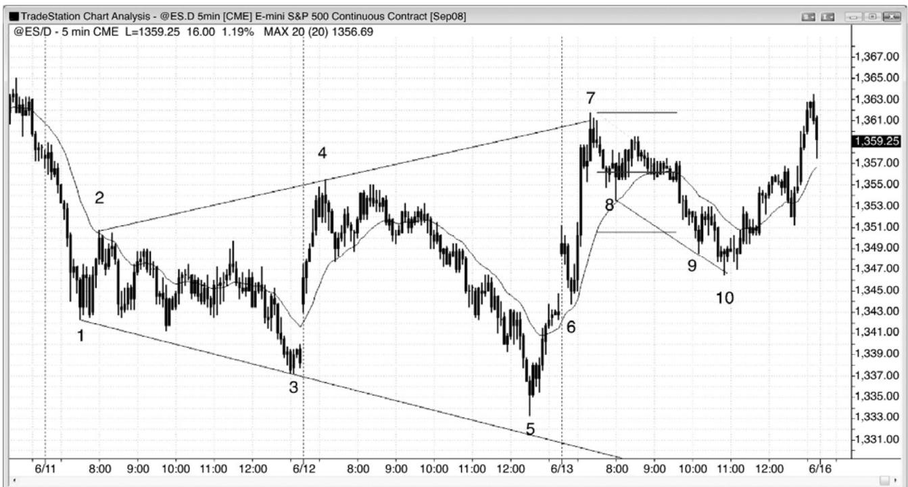
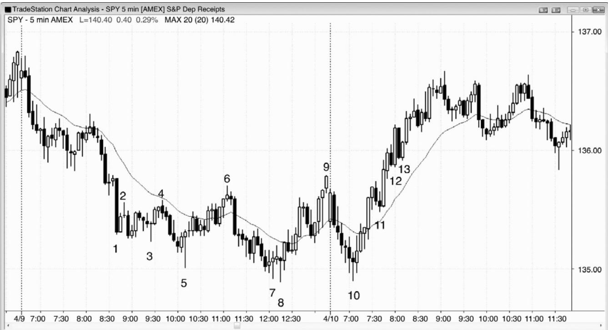
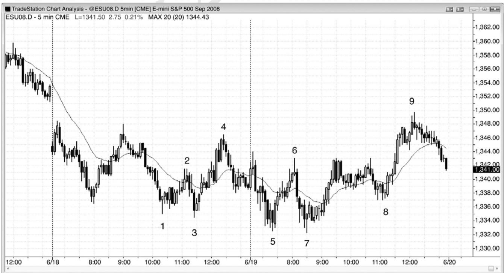

第6章 扩张三角形¶
第 6 章 扩张三角形
扩张三角形可能是反转形态，也可能是延续形态，至少有五个波段构成（有时是七个波段，极少情况下是九个），每个波段都比前一个大。它的力量部分来自每个新突破处被套的交易者。由于它是一个三角形，是一段交易区间，交易区间内的大部分突破尝试失败。这种倾向的结果是形成扩张三角形。在多头反转（扩张三角形底）中，市场有足够的力量向上超越最后一个更高高点，把多头套入；然后暴跌至第三个低点，在更低低点处把多头套出、空头套入，然后向上反转，迫使双方追逐市场上涨。那个新低是第三次下推，可以看作一种三推形态，也可看作一个突破回撤——市场向上突破最后一个波段高点，然后向一个更低低点回撤。在空头反转（扩张三角形顶）中，市场的做法刚好相反。空头被一个更低低点套入，然后被迫退出，然后多头被一个更高高点套入，当市场最后一次向下反转时，双方不得不追逐市场下跌。初始目标是突破三角形的另一侧，市场常常在那里再次反转。如果突破成功，那么反转失败，该形态成为原来趋势中的一个延续形态 。
举例说明，如果多头趋势中形成一个扩张三角形顶（一个反转形态），那么第一个目标是向下突破该形态；大部分情况下，那是大部分交易所能达到的幅度。如果突破成功，那么向下反转中的下一个目标是一波测量运动，其高度近似等于三角形中最后一条上涨腿的高度。如果突破失败，市场向上反转，那么三角形成为一个延续形态，在这种情况下是一个扩张三角形多头旗形，因为它是多头趋势中的一个三角形。初始目标是一个新的高点，通常那就是交易所能达到的幅度。如果突破成功，那么下一个目标是一波向上的测量运动，约等于三角形中最后一条腿的高度。如果突破失败，市场向下反转，那么它现在就是一个更大的扩张三角形顶，包含七条腿，而不是原来的五条腿。在某个点处，要么突破成功，市场形成一波近似的测量运动，要么三角形演变为一个较大的交易区间。
术语“三角形”容易引起误导，因为该形态常常看起来不像是三角形。突出特点是它是一系列越来越高的高点和越来越低的低点，它们继续套住突破型交易者，在某个点处，他们投降，然后所有交易者们都站在一方，制造一轮趋势。它包含三推，可以看作一个三推反转形态的变种，但是具有较深的回撤。举例说明，在空头趋势底部的多头反转中，两个回撤形成更高高点；然而，在类似楔形底的传统三推形态（向下的收敛三角形）中，两个回撤将形成更低高点（即不是一个扩张形态）。
所有扩张三角形都是重要趋势反转的变种，因为最后的反转总是跟在一条很强的腿形之后。举例说明，扩张三角形底中，最后低点开始的反弹之前的反弹很强，超越了前一波段高点，那波反弹总是会突破某条重要的空头趋势线。最低限度，第二次下推之后的反弹，向上突破包含第二条下跌腿的空头趋势线，因此，第三次下推是一个更低低点重要趋势反转买进架构。向第一条腿或第二条腿的反弹通常也向上突破另外某条重要空头趋势线。

P111
空头趋势中的扩张三角形底，后来常常演变为扩张三角形空头旗形。图 6.1 中，电子迷你开盘向上跳空，而后棒 6 回撤测试均线和昨日低点，接下来形成开盘反转，迅速上涨。棒5 处的昨日低点与棒 1、2、3 和 4 形成一个扩张三角形底。这是一个反转形态，因为三角形之前的趋势是向下的。第一个目标是一个新的波段高点，在棒 7 到达。然后，市场通常尝试形成一个扩张三角形空头旗形，由于它是在空头趋势中的一段交易区间内，所以是一个延续形态。市场在棒 7 过冲多头趋势通道线后完成一个空头旗形（该三角形由棒 2、3、4、5 和 7构成）。在趋势通道线突破失败后，尤其是当形成扩张三角形时，通常会出现一波两条腿下跌。顺便提一句，扩张三角形不必拥有完美的外形，不必触及趋势通道线（棒 5 未跌至正轨线）。
截止棒 7 的反弹非常强劲，但是在这种情况下，交易区间顶部的低点 2 做空架构值得入场。棒 8 是连续形成的第二个十字星，十字星代表着多空双方的平衡。由于他们势均力敌，所以那个平衡点常常是下跌运动的中点，根据这个参考点，能够大致估算出市场在寻找足够的买压以使市场向上反转时会下跌多少。市场在棒 9 达到目标，但是市场一直没有反弹，直到棒 10 楔形多头旗形信号棒，过冲空头趋势线并向上反转。棒 10 也是对棒 6 信号棒上方初始做多入场的精确测试（一个完美的突破测试）。

在扩张三角形反转形态中，低点变得越来越低，高点变得越来越高。一般而言，市场在反转前会五次转向，但有时是七次，比如图 6.2 所示 SPY 的 5 分钟图。通常都有正确的理由在每条腿刮头皮（举例说明，每条腿都是交易区间内一个新的波段高点或低点），但是，一旦第五条腿完成，可能形成一轮更大的趋势，将部分头寸波段化就是明智之举。另外，一旦该形态完成，它通常会形成一个反向的扩张三角形形态。如果第一个三角形是一个反转形态，那么这个形态的下一部分（那将是反向的），一旦形成，则将是一个延续形态，反之亦然。
P112
棒 5 是第五条腿（棒 1 是第一条），所以是一个买进构架，预期至少形成两条上涨腿。然而，棒 6 是一个失败的突破做空架构和一个小型楔形（从棒 5 开始的上涨尖峰之后，它是通道内三次小型上推的第三个）。这构成一个扩张三角形空头旗形，该形态五个波段中的第一个是棒 2。
第七条腿在棒 8 形成一个二次入场。棒 7 是新低处的第一个架构，但是它以失败告终，这一点在意料之内，因为该入场处于一个带刺铁丝形态之中，大部分交易者会等待二次信号。棒 8 也是一个高点 3 买进架构，位于从棒 6 开始的下跌尖峰之后小型空头通道内，第三次下推常常预示着一个尖峰和通道空头趋势形态的结束。
棒 10 测试棒 8 低点，但它的低点高出一个跳动。它类似于一个扩张三角形（在交易中，近似就好）中的第九条腿。作为对昨日低点的一个双重底测试和交易区间底部的一个高点 2买进架构，它是一个很好的开盘反转买进架构。
棒 11 是市场超越开盘高点后的一次突破回撤，不过市场没有向上突破三角形在棒 9 的高点。在一轮可能的新多头趋势中，它是一个高点 1 做多架构，形成于一个很强的五棒多头尖峰之后，所以是一个可靠的买进架构。
棒 12 是交易区间顶部（扩张三角形是一种交易区间）的一个低点 2，是这张 SPY 图表上的一个单跳动空头突破失败。但是，电子迷你图表（未给出）一直保持在反转棒低点之上，没有触发该形态。电子迷你会给出较少的虚假信号，因为电子迷你的每个跳动等价于 SPY 的2.5 个跳动。由于上行动能足够强，所以多头趋势可能正在行进之中，在考虑做空之前，交易者们应该等待，看是否会形成一个更低高点。
棒13是向上突破棒9失败后的二次做空入场，但是，由于反弹过程中之前也没有出现趋势线突破，所以在之前没有空头力量的情况下做空是不明智的。在做空之前，空头应该等待一个更低高点。
棒 12 和 13 不是突破失败，而是新多头趋势中的突破回撤。

如图 6.3 所示，棒 1 到棒 5 构成一个扩张三角形底的五条腿。入场位于棒 5 更低低点上方 1 个跳动处。在跌至新低之前，棒 6 未能向上超越棒 4 高点。棒 7 是扩张三角形中一次二次入场机会，但是棒 5 和棒 7 之间的棒线非常多，该三角形已经失去了它的影响力，只是成为从当日新低开始的一个双重底反转。
棒 8 形成一个更高低点，也是棒 5 和棒 7 双重底之后的一个双重底回撤做多架构。
在到达新波段高点的目标之后，棒9形成一个扩张三角形空头旗形（棒2、3、4、7和9），这个做空架构的目标位于棒 7 低点下方。然而，这些越来越大的三角形最终失败，一轮趋势开始。顺便提一句，市场在次日向下跳空至棒 7 下方，到达目标。该形态不大成比例，因为棒 4 和棒 9 之间的距离比棒 2 和棒 4 之间的距离要大很多。当该形态那样反常时，只有很少的交易者会信任它，这便削弱了该形态的影响力。然而，交易者们仍然会把棒 9 看作一段空头交易区间的顶部，与昨日高点构成一个双重顶空头旗形，以及对昨日高点上方缺口的测试，那些理由足够令他们做空。
P113